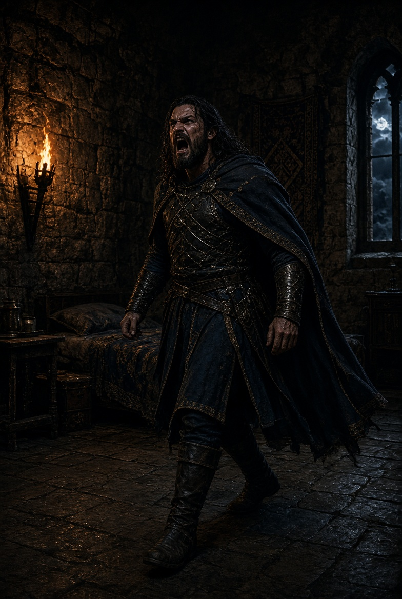

Book II · Kaz Wolff
Grail of Betrayal
Four souls — Jack, Adel, Zahilla, and Blain — serving a Council's penance across millennia. Book II wears Camelot as a skin.

Aeonic Odyssey is a six-book epic. Jack, once Aeryn, the so-called God of Destruction, is serving a thousand-year penance in the third dimension. Book II is Arthurian Britain: Lancelot, Guinevere, Arthur, Excalibur. Those are costumes.
One thread is Jack, trapped in Lancelot, trying to reclaim his sentient sword Fang. The other is Zahilla, wearing Arthur, hunting a Grail that is not holy. Merlin is a fourth-dimensional hacker with green and purple mist.
I am not going to dump the plot here. The working notes exist so a model can hold canon. This site exists so a person can see how that actually works.
The table — as the notes keep them
Penitent. God of Destruction.
Jack / Lancelot
Internal voice is modern and crude. External speech is forced Arthurian.
The king. The dragon.
Zahilla / Arthur
Cunning, mythic, hungry. If a model collapses them into one dark king, the chapter is wrong.
The queen.
Adel / Guinevere
Regal outside, a past life hammering on the door. I do not let a model turn her into a prize.
Sentient sword
Fang / Excalibur
Sarcastic. Soulful. Hates being called Excalibur. She is a character, not a McGuffin.
Opening page
A taste. Not the file.
The clashing of steel and the agonized cries of fallen knights echoed through the night as Lancelot urged his horse through the chaos engulfing Camelot.
In a small clearing he caught her before she hit the earth. “Adel?” he murmured.
“Jack,” she whispered. “You may have taken me from Camelot, but Zahilla has won. Now he has Fang, and he has me.”
